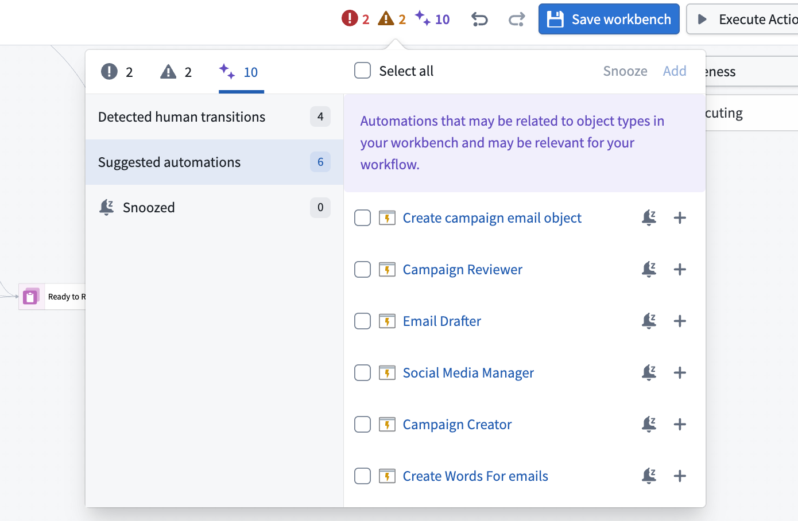

Getting started
To get started, create an Autopilot workbench from one of the following entry points:
- Directly in Autopilot: Open Autopilot from the application portal and select object types (optionally selecting the related automations to import), or select automations directly.
- From an automation: On the overview page for an automation, select Open in Autopilot in the Actions menu.
Set up your Autopilot workbench
Autopilot automatically generates an initial workbench for you based on the starting object types or automations you have selected. Alerts at the top of your workbench guide you through steps to configure a complete system view.
Workbench configuration
- Review and add automations: When you open your workbench, Autopilot will alert you to automations related to your workflow that are not yet included in your workbench. Follow the prompts to add relevant automations for a complete system view.
- Customize states: Autopilot infers and automatically generates states (columns in your Kanban board) based on automations in your workbench. You can also add and manually define your own states.
* In the States sidebar, drag states to reorganize the Kanban board.

- Enable project-scoped mode for full visibility: For the most comprehensive view of your automation system, enable project-scoped mode on your automations. This setting allows all workbench users to view automation execution events and discover dependencies between automations.
:::callout{theme="warning"}
Project-scoped mode expands permissions so that automation relationships are visible to all users in the project. Autopilot may not be able to infer relationships for user-scoped automations owned by another user.
:::
- Enable edit history tracking for object types: Enable edit history for your object types to track changes and view detailed object histories within Autopilot.
- Ensure automations have run at least once: Autopilot relies on historical executions to discover relationships between automations; if an automation has never run or the automation is scheduled, Autopilot cannot infer the dependent automations in a process.
- Enable trace logs per resource: Trace logs show detailed execution for each automation run. Contact your enrollment administrator to enable logs.
:::callout{theme="neutral"}
For more granular logs, consider using console in your TypeScript functions or import logging in your Python functions.
:::
- Configure object card properties and object previews: Define which object properties appear on Kanban cards, set conditional formatting for properties, and customize object views in Ontology Manager. Autopilot will render the panel object view for an object in the sidebar, when available. View the Autopilot integrations documentation for more details on working with Ontology Manager.
Understand alerts
Autopilot continually analyzes your workflow and displays alerts for recommended configuration steps. These alerts help you:
- Complete your workflow view: Identify and add automations related to your workflow that are not yet included in your workbench.
- Improve observability: Enable settings like project-scoped mode, edit history tracking, and trace logs that enhance Autopilot's ability to show execution details and relationships.
- Resolve configuration issues: Address any missing permissions or settings that prevent Autopilot from displaying complete workflow information.
